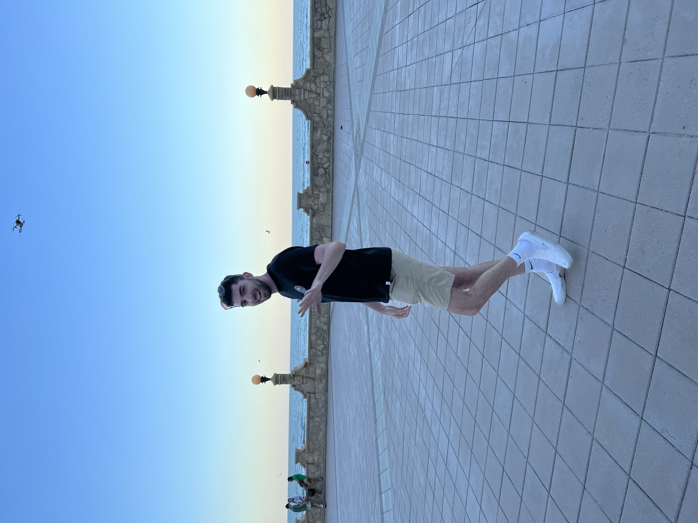

Grant Osborne
20 Garrison Lane | Ballston Lake, NY 12019 | (518) 545-9927 | osborngk@dukes.jmu.edu

Education
James Madison University – Harrisonburg, VA, May 2023
Bachelor of Science in Sports & Recreation Management; Minor: General Business
Bachelor of Arts in Media Arts and Design
GPA: 3.7/4.0; School of Business Academic Excellence Scholarship, Dollars for Scholars Award
Bachelor of Science in Sports & Recreation Management; Minor: General Business
Bachelor of Arts in Media Arts and Design
GPA: 3.7/4.0; School of Business Academic Excellence Scholarship, Dollars for Scholars Award
Related Coursework
Introduction to Sports Media, Management in Sports and Recreation, Sociology and Psychology in Sports, Audio/Video Storytelling, User Experience Design, Introduction to Advertising and New Media, Copywriting for Advertising, Sports Marketing and Sales, Program and Assessment in Sports and Recreation, Ethical & Legal Issues in Sports and Recreation, Media Art: Culture by Designs, Elements Creative Advertising
Career Related Experience
Graphic Design Intern, August 2022-present
James Madison Athletics Department, Harrisonburg, VA
- Created season ticket and individual basketball game ads
- Designed team posters for women’s tennis and field hockey
- Designed Stranger Things themed basketball t-shirt design
Marketing Intern, June 2022-August 2022
Capital District YMCA, Albany, NY
- Created print media such as flyers and brochures, social media posts, and other CDYMCA collateral
- Consulted with Branch Executive Directors and discussed their marketing needs
- Ran the Schenectady YMCA Facebook by taking photos, videos, and created content
Marketing Assistant, August 2020-October 2021
James Madison University Recreation Center, Harrisonburg, VA
- Promoted information regarding University Recreation programs, facilities, and services
- Designed flyers, signage, and displays for intramural sports and adventure activities
- Marketed sport and recreation events on social media platforms, including Instagram and Twitter
- Photographed and livestreamed University Recreation events
Computer Skills
Photoshop, Illustrator, InDesign, WordPress, Google Drive, Trello, Sublime, Axure RP, GarageBand, MailChimp, Microsoft Office (Word, Excel, PowerPoint, Outlook), Google Analytics, Canva, Agorapulse